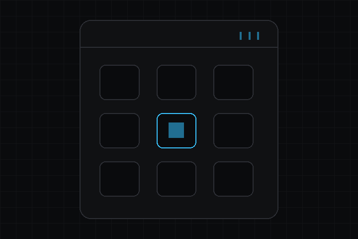

- 構築:
 1.18.0
1.18.0
|
deki-tactility-integration 0.30.3
Deki パッケージリファレンス
|

Deki のゲームを、デバイス全体を占有するファームウェアとしてではなく、ESP32 ボード向けのオペレーティングシステム Tactility の中のアプリとして実行します。
リポジトリ: github.com/dekiengine/deki-tactility-integration · 最新リリース: 0.30.1 · エンジン 0.30.0 以降が必要 · 依存: deki-input
DekiEditor --packages-add deki-tactility-integration <project> か、パッケージマネージャーからインストールします。エンジン自身のコンポーネントと C++ API は Deki のドキュメントにあります。
エディターでは Tactility Integration と表示されます。
| コンポーネント | カテゴリ | 説明 |
|---|---|---|
| TactilityAudioSetup | Tactility | Deki のオーディオを Tactility のスピーカーで再生します。 |
| TactilityDisplaySetup | Tactility | Tactility のディスプレイをゲームに渡します。パネル全体か、OS を動かしたままのウィンドウを使います。 |
| TactilityInputSetup | Tactility | Tactility のタッチとキーボードを Deki の入力システムに渡します。 |
ビルドから外せる部分です。define を持つ機能はその define で切り替わり、それ以外はコンポーネントと一緒に取り除かれます。
| 機能 | define | デフォルト |
|---|---|---|
| Display | — | オン |
| Input | — | オン |
| Audio | — | オン |
Deki のオーディオを Tactility のスピーカーで再生します。
インスペクターでの名前: Tactility オーディオ設定 · カテゴリ: Tactility · 型: DekiTactility::TactilityAudioSetup
| プロパティ | 型 | デフォルト | 制約 | 説明 |
|---|---|---|---|---|
| sampleRate | int32 | 16000 | 8000 から 48000 | ゲームが再生する 1 秒あたりのサンプル数です。Tactility がスピーカー本来のレートに変換するので、ゲームの音が作られたレートを指定します。 |
| initialVolume | int32 | 80 | 0 から 100 | 起動時のゲーム自身の音量です (0 から 100)。その上にデバイスのシステム音量もかかります。 |
Tactility のディスプレイをゲームに渡します。パネル全体か、OS を動かしたままのウィンドウを使います。
インスペクターでの名前: Tactility ディスプレイセットアップ · カテゴリ: Tactility · 型: DekiTactility::TactilityDisplaySetup
| プロパティ | 型 | デフォルト | 制約 | 説明 |
|---|---|---|---|---|
| mode | enum | "Panel" | Panel, Window | パネルはディスプレイ全体を使い、LVGL を止めるので、すべてのピクセルをゲームが扱います。ウィンドウは LVGL と OS を動かしたまま、アプリのウィンドウの中でプラットフォームの画面サイズでゲームを実行します。 |
Tactility のタッチとキーボードを Deki の入力システムに渡します。
インスペクターでの名前: Tactility 入力セットアップ · カテゴリ: Tactility · 型: DekiTactility::TactilityInputSetup
リフレクションされたプロパティはありません。
変更履歴は英語です。
それ以前のリリース: CHANGELOG.md
パッケージのリフレクションデータから生成しています (エンジン 0.30.3)。プロパティ名はシーンファイルで使われるキーです。名前を変えても別名が残ります (互換性)。